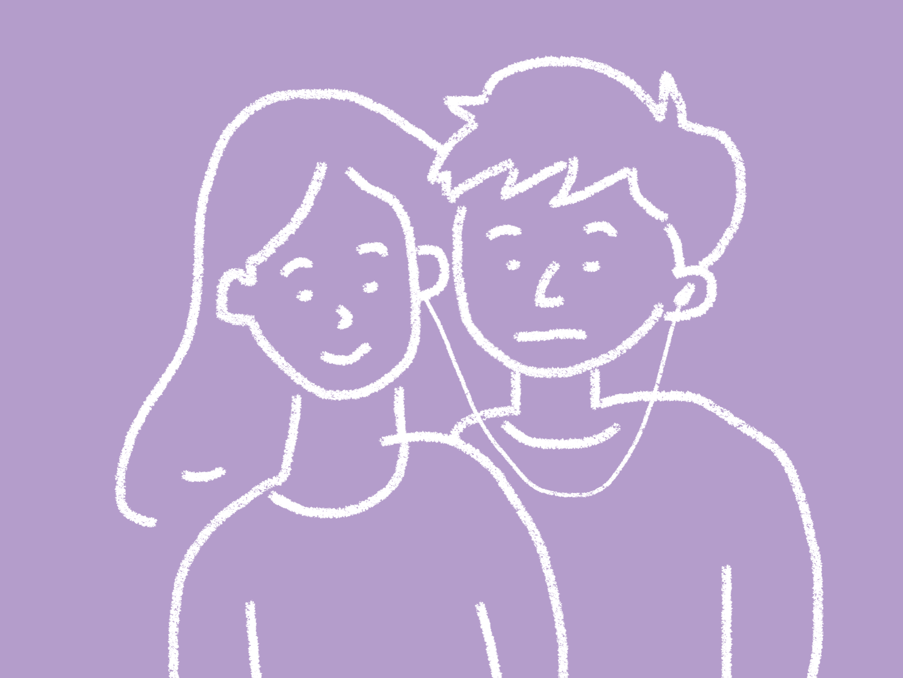

The day I uploaded my memory, I hesitated. Even though I had booked the “Emotion Cloud Sync” session earlier, I only realized how unprepared I was when I actually stepped into the quiet upload room.
The staff asked me to lie on a white metal chair, surrounded by soft pink lighting. He handed me a headset and explained it would gently scan my brain for short-term emotional fluctuations, and convert them into labeled memories using text and images.
At that moment, I got scared. Would my sadness be misunderstood? Would my loneliness seem too weak?
I tried to control my breathing, but my mind kept flashing back to that late night—me sitting by the window, staring at the city lights without moving. I forced myself to recall the feeling. It wasn’t like crying—it was a kind of emptiness I couldn’t describe.
The system’s feedback felt strange to me. I thought it would generate a video reflecting my loneliness or a report showing my emotional state.
But instead, several keywords popped up: “Calm”, “Detached”, “Unconscious Defense.”
I was stunned. Why did it say I was “calm”? That wasn’t calm—it was numbness. I thought I was struggling, trying to deal with my negative emotions. But in this system’s logic, those struggles didn’t seem to exist. It only recognized the outcome, not the process.
The more I looked, the more frustrated I felt. My feelings were simplified and categorized, like labeled products. The system even suggested I join a “recommended community” of users with similar tags. But I didn’t want to share these feelings—especially not after they’d been treated in such a cold, mechanical way.
It made me question whether this technology could really help me understand myself.
I tried sharing the memory with my best friend, LING. We used to talk about everything—even our most private thoughts. But this time was different.
When she wore the headset and began syncing with my memory, I noticed her expression changed. It wasn’t sympathy or emotional connection—it was an awkward confusion.
I thought she would understand, comfort me, and maybe even feel the loneliness I had hidden. But all she said was: “It didn’t feel as sad as I imagined.”
My heart sank. Was my expression too complicated? Or could she just not relate at all? That’s the problem with “memory sharing.” You can see my past, but that doesn’t mean you’ll feel it. You might even misunderstand it.
The system says it’s for “efficient communication,” but I felt it pushed us further apart. Maybe some feelings are meant to stay private.
I took off the device, turned off the sync, and walked to a nearby park. The city parks had changed. Big screens showed government ads, sensors were hidden in the grass, and benches gave you “emotional advice” based on how you sat.
But at night, everything slowed down—just like me. I sat quietly on a bench in the corner. The wind was soft, and a few stray cats lay nearby.
I tried to stop thinking, but my mind kept replaying that shared moment with LING—not what she said, but what she didn’t. That silence.
I realized real listening doesn’t mean reading my memory. It means sitting beside me without needing to say anything. And at that moment, I understood—Not every memory should be shared. Sometimes, what we really need is a space to process quietly, alone.
The night deepened. The city sank into a soft blue-grey silence. I walked home slowly, thinking about one question: If I stop uploading my memories, am I still fully “me”?
By 2050, emotions had become digitalized and platformed. There were even laws that required some jobs to upload their mental states monthly. Schools too. The Memory Cloud system sent me alerts: “Your emotional activity is below average this month. Please consider sharing.”
But who decided we must always express ourselves? Do I really have to let others know every time I’m sad? And the system isn’t perfect. It only recognizes major emotions, but misses the hidden ones—The little bits of hope, shame, even a small pride I felt inside loneliness.
As technology improved, I found myself more uncertain: Am I sharing my “truth,” or just what the system wants me to remember? I looked up at the clear night sky. The stars were distant. And I suddenly felt—Maybe the system was never meant to help us understand ourselves, but only to make our feelings easier to manage—measurable, predictable.
Maybe having emotions only I know… That too, is a kind of freedom.
Maybe the system could never truly understand us — but maybe, that's okay.